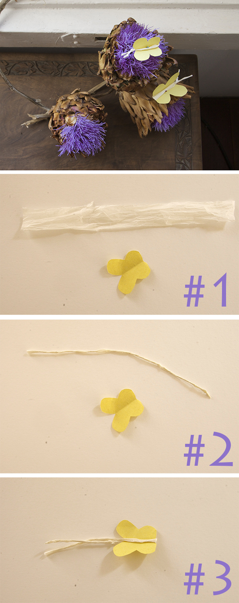

- Cut a butterfly from a folded sheet of paper.
- Roll a strip of napkin between your palms into a kind of string.
- Wrap it around the middle of the butterfly, twist the ends and trim them to antenna length.
With a pin you can put your butterflies on flowers or a pinboard.
